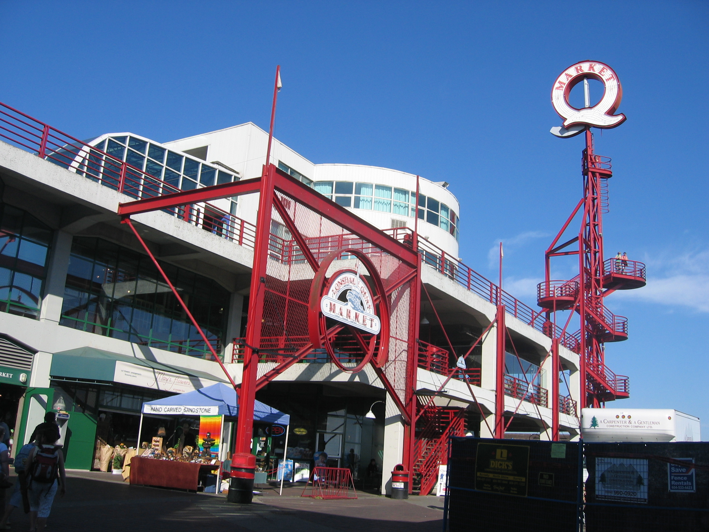

North Vancouver
North Vancouver
North Vancouver
North Vancouver
The Quay is located on the Lower Lonsdale waterfront in North Vancouver, near the Seabus terminal.
The Quay is a place that brings the community and visitors together to interact and share experiences; to explore, enjoy and learn about locally made food, drink and products in a fun, vibrant setting. Over the years, The Quay has evolved into a curated culinary destination for those seeking fresh, local and unique foods. The Quay features fantastic local vendors, artisans, entertainers and retailers.
Lonsdale Quay on Google Maps.
Looking out at Vancouver from Lonsdale Quay.